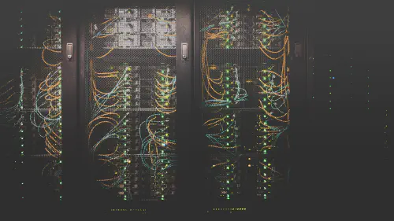

Skip to content
Felicitas Pojtinger üå®Ô∏è
Articles
CV
The Cluster Platform L2 Overlay Network
Let's bring back networking simplicity!
InfraCTL is Generally Available!
A supra-cloud CLI for nodes, layer 2/layer 3 overlay networks and Kubernetes clusters

Sane Categories for Software Distribution Systems
Why are these systems so hard to set up?
The Product Oriented Approach
Yet another way of structuring one's projects.